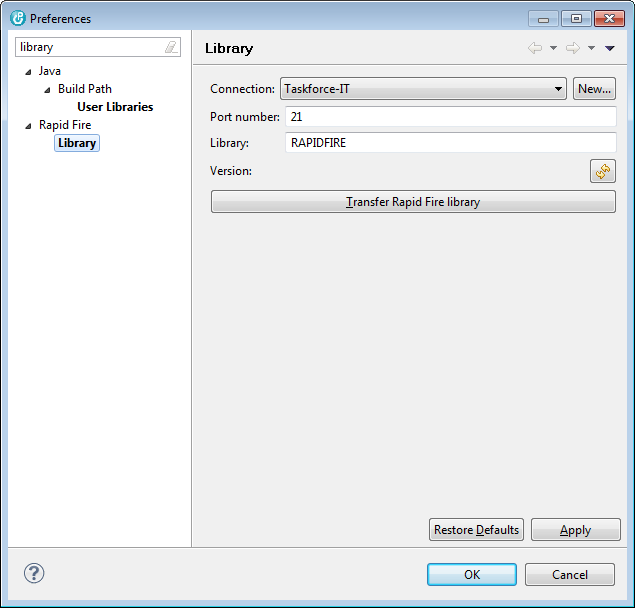

The available options are:
| Connection | - | Specifies the Remote System connection that is used for uploading the Rapid Fire library to the host. The library is uploaded with FTP. |
| Port number | - | Specifies the FTP port number. |
| Library | - | Specifies the name of the Rapid Fire product library on the host. The recommended default name is RAPIDFIRE. |
The Transfer Rapid Fire library button starts uploading the library to the host. Goto Install Rapid Fire Library to see the details.